10. 화학반응기 제어계의 블록선도
여기서는 지금까지 소개한 원리를 서로 결합시키고, 물리적 제어계를 블록선도로 표시하는 방법을 설명하기 위해 연속 화학반응기 제어계를 예시로 살펴볼 것이다.
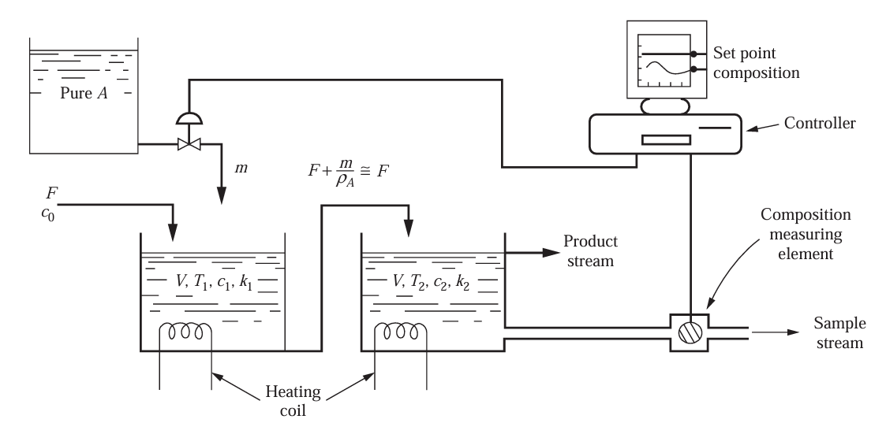
먼저 순수한 A가 있는데, 이것이 농도는 C0이고 흐름 F의 부피유량으로 탱크에 유입된다.이는 탱크에서 화학반응을 거쳐 B가 되는데, 편의상 1차반응이라고 가정하겠다.
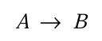
그럼 반응속도식은 다음과 같다.
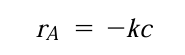
이때, 직렬로 연결된 두개의 반응기 내에서 반응이 일어난다. 탱크는 서로 다른 온도로 유지되는데, 탱크 2가 탱크1보다 온도가 더 높다. 따라서 탱크 2의 반응 속도 상수 k2가 훨씬 높다고 가정한다.
제어계의 목적은 탱크 2에서 나오는 A의 농도 C2를 유입농도 C0의 변화에도 불구하고 어떤 목표값에 유지하는 것이다. 이것은 순수한 A를 제어밸브를 통하여 탱크 1에 추가함으로써 달성할 수 있다. 이것의 유입량을 줄이거나 늘리는 것이다.
우리의 목적은 유입농도에 대한 유출농도 C2의 응답을 모사할 수 있도록 공정의 블록선도를 구하는 것이다.
1)반응기의 전달함수
먼저 탱크1에 A의 열린계 물질수지를 세워보자.
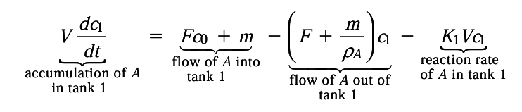
시간당 축적되는 A의 몰수 =들어오는 몰수 - 나가는 몰수 (m/밀도=부피) - 반응되어 없어지는 몰수
이때 나가는 흐름을 그냥 F로 퉁치면 다음과 같이 변한다.
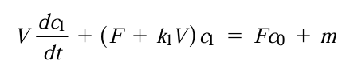
양변을 F+K1V로 나누어주면 다음처럼 된다. 이를 (1)식이라고 하자.
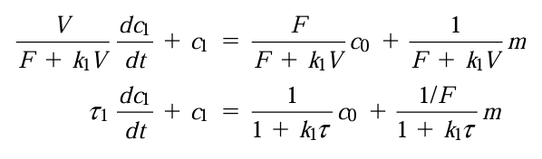
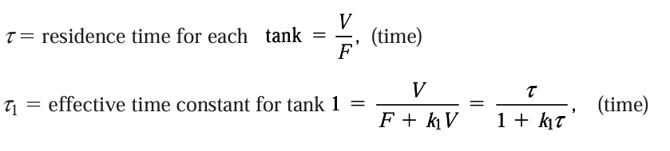
정상상태인 경우 축적은 없으므로 식은 다음처럼 된다.
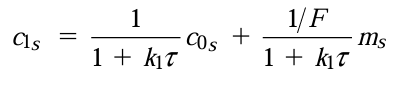
이제 편차변수를 도입할 것이므로, (1)식에서 정상상태 값을 빼준다. 그러면 다음처럼 된다.
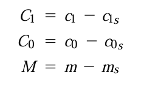 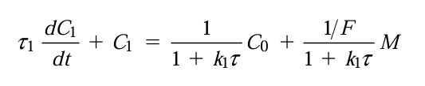
이제 여기서 전달함수를 구해보도록 하자. 이를 라플라스 변환하면 함수 C1(S)는 다음처럼 두 변수의 함수이다.
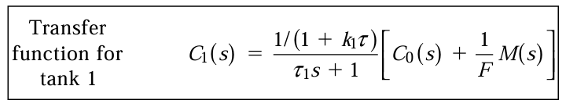
이제 탱크 2에도 물질수지를 적용하자.
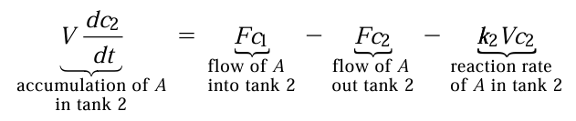 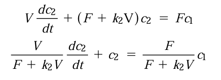
이걸 편차변수의 항으로 정리하고, 시간상수 타우2를 도입하면 다음과 같다.
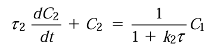
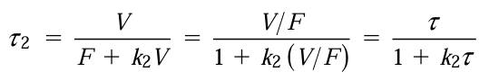
이제 이걸 라플라스 변환하여 C2(S)를 구해보면 다음과 같다.
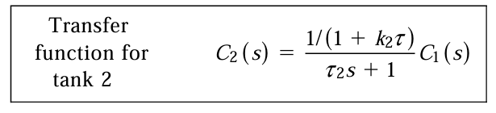
이제 수치적인 실제 결과를 얻기 위해, 자료조사를 하였다. 이로 인해 다음 자료를 얻을 수 있었다.
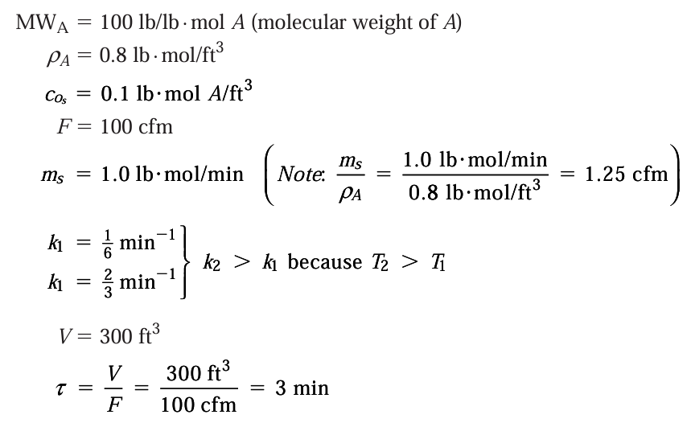
정리해보면 각 탱크에서 전달함수는 다음과 같았다.
또한 각 탱크의 정상상태 농도도 계산해보면 다음과 같다.
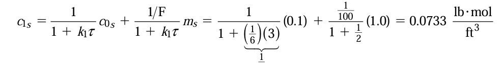
2)제어밸브
대상공정에 대하여 선택된 제어밸브는 선형밸브라고 가정한다. 그리고 공기압 열림 형을 쓸 것이다. 이는 원래량보다 A가 적어져 오차가 커지면 압력도 커지고, 이에 따라 A공급량도 커지는 효과가 있다. 이때 밸브의 시간상수를 무시하면 제어밸브의 전달함수는 다음과 같음을 저번 포스팅에서 알아보았다.
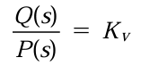
이때 KV를 계산해보자. 이는 실험적으로 측정하는데, 밸브 상단 압력이 3에서 15로 변화할 때 유량이 0에서 2로 증가했다면 K는 다음과 같다.
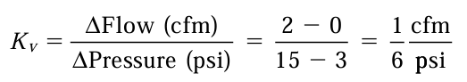
또 밸브의 정상상태(초기상태)운전 압력은 앞에서 제시된 데이터로 구할 수 있다.
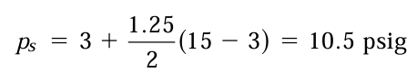
그리고, 탱크의 몰수지가 몰 흐름량으로 표시되기 때문에 밸브에 대한 식 Q도 몰흐름량으로 표현하도록 하면 다음식이 나온다.
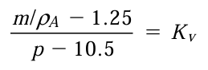
최종적으로 m은 다음과 같다.
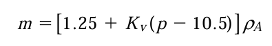
다시 편차변수를 도입하도록 하자.
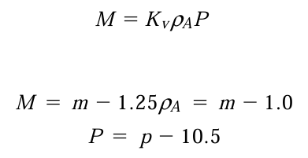
이제 위 식에서 전달함수는
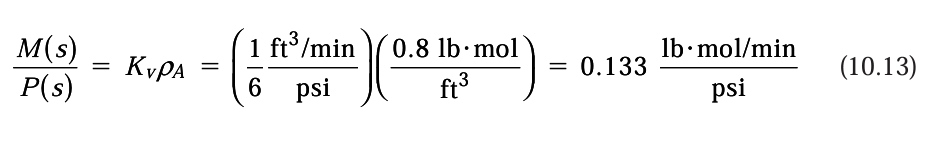
원래 Q/P였는데, 이를 M/P로 구한 것이다.
3)변환기(=측정기=측정요소 역할도 겸임한다고 가정)
A의 농도를 측정한 후 이를 전기신호로 바꾼다고 가정해보자. A의 농도 측정범위를 0.01에서 0.05 사이로 두고, 이에 할당되는 전기신호를 4~20mA로 바꾸면 변환기의 민감도는 다음과 같다.
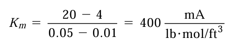
또 정상상태에서 C2S는 0.0244이므로 이때 변환기 신호는 다음과 같다.
0.0244*400=9.76
따라서 변환기에 입력되는 농도에 대한 출력 전기신호식은 다음과 같다.
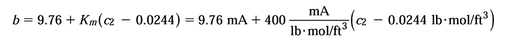
마지막으로 전달함수도 구해보면, 다음처럼 간단하게 나온다.
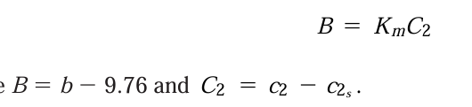
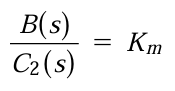
4)제어기
이제 측정요소에서 측정된 농도가 변환기에서 전류b로 바뀌었다. 이것이 제어기에 입력되면 설정점 전류 CR과의 오차를 계산하게 되고, 오차에 비례한 출력을 다시 전환기에 보내줄 것이다. 제어기에서 계산한 오차와 출력신호간의 관계는 비례제어기를 가정하면 다음과 같다.
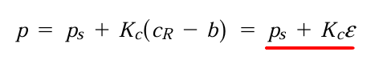
이때 헷갈리게 p라고 적혀져있긴한데, 이 p는 출력 전기신호이고 단위는 mA이다. 압력이 아니다. 이걸 편차변수의 항으로 표현하고 전달함수를 얻으면
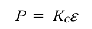 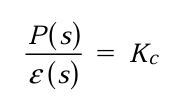
계가 정상상태일 때, 측정요소에서 측정한 농도와 설정점이 같다고 하면 측정신호는 정상상태에서 CRs=bs=9,76mA이다.
5)제어기 변환기
지금 상황을 살펴보면 변환기가 C2를 측정하였고, 농도 측정범위를 0.01에서 0.05 사이로 두고, 이에 할당되는 전기신호를 4~20mA로 바꾸어 주었다. 이것이 제어기에 입력된 후 정상상태와의 오차를 계산하여 그에 맞는 전기신호를 다시 보내주었다. 만약 정상상태라면 9.76mA가 보내질 것이고, 오차가 양으로 발생하게 되면 출력이 더 세질 것이다. 이 또한 4~20mA의 범위의 출력신호이다. 이것이 제어기 변환기에서 공기압으로 바뀌어야 한다. 따라서 변환기가 선형이라고 가정ㅇ하면 다음과 같은 전달함수를 얻는다.
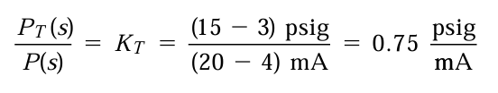
6)수송지연
아니 근데 탱크 2에서 나온 액체의 농도 측정을 하는데, 이때 수송지연이 발생하여 측정기에 조금 늦게 도착했다고 가정한다. 이때 수송지연이 0.5분정도 걸렸다고 가정하면 샘플관의 전달함수는 다음과 같다.
수송지연의 전달함수는 e^-s τ 임을 외워두어라.
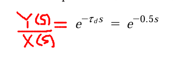
수송지연은 거의 화공산업에서 항상 보편적으로 나타난다. 일반적으로 장비들을 가깝게 배치하여 제거할 수 있으나 완전히 없애는 건 불가능하다.
7)이제 여기까지의 논의를 모두 조합하여 블록선도로 나타내보면 다음과 같다.
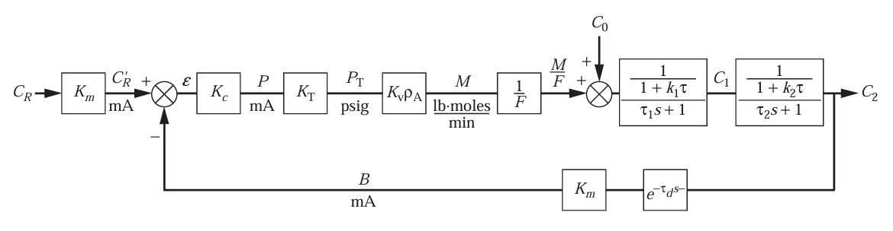
라플라스 변환되었다는 관점에서 목표치 CR이 입력되어 측정요소(변환기)로 들어가 전류신호로 바뀌게 된다. 이것은 가산접합부에서 측정값과 비교되어 오차를 만든다. 원래는 오차가 0이겠지만, 모종의 이유로 공급 농도가 작아져서 오차가 큰 양의 값을 가지면, 이 오차는 제어기로 보내지게 되는데, 제어기에서 선형적으로 전류신호로 바뀌게 된다. 이렇게 바뀐 전류신호는 변환기에서 선형적으로 다시 압력으로 바뀌고, 이 압력은 제어밸브에 작용하여 유량의 변화(밸브 열림으로 유량이 추가됨)을 이끌어낸다. 이 유량의 변화는 초기 유입인 농도와 함께 합쳐져 공정에서 C2로 출력되게 된다. M/F는 농도를 의미한다. 비례제어이므로 항상 오차가 일부 존재할 것이다.